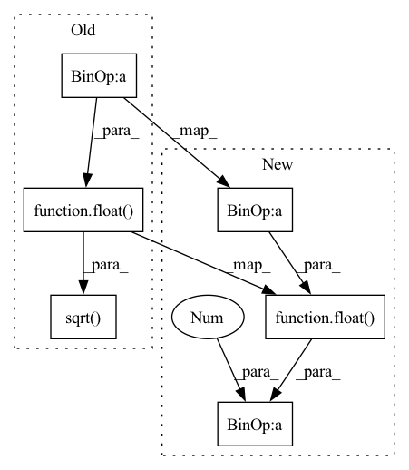

Pattern ID :36999

Before Change
def build(self, query_shape):
// print(query_shape)
self.height = self.input_height if self.input_height > 0 else int(tf.math.sqrt(float(query_shape[2] - 1)))
self.width = (query_shape[2] - 1) // self.height
self.num_heads, self.query_dim = query_shape[1], query_shape[-1]
self.channel_splits = [ii * self.query_dim for ii in self.head_splits]
After Change
import tensorflow as tf
// print(query_shape)
self.height = self.input_height if self.input_height > 0 else int(float(query_shape[2] - 1) ** 0.5)
self.width = (query_shape[2] - 1) // self.height
self.num_heads, self.query_dim = query_shape[1], query_shape[-1]
self.channel_splits = [ii * self.query_dim for ii in self.head_splits]
In pattern: SUPERPATTERN
Frequency: 6
Non-data size: 6
Instances
Fragment ID: 105248341
Project Name: leondgarse/keras_cv_attention_models
Commit Name: 2ba27b0132168f3590dd4b3bead9edc15a70ba7d
Time: 2023-02-11
Author: leondgarse@gmail.com
File Name: keras_cv_attention_models/coat/coat.py
M Class Name: ConvRelativePositionalEncoding
N Class Name: ConvRelativePositionalEncoding
M Method Name: build(2)
N Method Name: build(2)
M Parent Class: layers.Layer
N Parent Class: keras.layers.Layer
M File Name: keras_cv_attention_models/coat/coat.py
N File Name: keras_cv_attention_models/coat/coat.py
M Start Line: 72
M End Line: 82
N Start Line: 73
N End Line: 83
'>
Before Change
self.supports_masking = False
def build(self, input_shape):
self.height = self.input_height if self.input_height > 0 else int(tf.math.sqrt(float(input_shape[1] - 1)))
self.width = (input_shape[1] - 1) // self.height
self.channel = input_shape[-1]
After Change
self.supports_masking = False
def build(self, input_shape):
self.height = self.input_height if self.input_height > 0 else int(float(input_shape[1] - 1) ** 0.5)
self.width = (input_shape[1] - 1) // self.height
self.channel = input_shape[-1]
'>
Fragment ID: 105248340
Project Name: leondgarse/keras_cv_attention_models
Commit Name: 2ba27b0132168f3590dd4b3bead9edc15a70ba7d
Time: 2023-02-11
Author: leondgarse@gmail.com
File Name: keras_cv_attention_models/coat/coat.py
M Class Name: ConvPositionalEncoding
N Class Name: ConvPositionalEncoding
M Method Name: build(2)
N Method Name: build(2)
M Parent Class: layers.Layer
N Parent Class: keras.layers.Layer
M File Name: keras_cv_attention_models/coat/coat.py
N File Name: keras_cv_attention_models/coat/coat.py
M Start Line: 33
M End Line: 38
N Start Line: 32
N End Line: 37
'>
Before Change
// input (with_cls_token=False): `[batch, num_heads, attn_blocks, attn_blocks]`. where `attn_blocks = attn_height * attn_width`
// print(attn_shape)
if self.attn_height == -1:
height = width = int(tf.math.sqrt(float(attn_shape[2] - self.cls_token_len))) // hh == ww, e.g. 14
else:
height = self.attn_height
width = int(float(attn_shape[2] - self.cls_token_len) / height)
After Change
// input (with_cls_token=False): `[batch, num_heads, attn_blocks, attn_blocks]`. where `attn_blocks = attn_height * attn_width`
// print(attn_shape)
if self.attn_height == -1:
height = width = int(float(attn_shape[2] - self.cls_token_len) ** 0.5) // hh == ww, e.g. 14
else:
height = self.attn_height
width = int(float(attn_shape[2] - self.cls_token_len) / height)
'>
Fragment ID: 105248336
Project Name: leondgarse/keras_cv_attention_models
Commit Name: 1aa29dc686f862bc1ff66a11700fa8ef16bd2b8a
Time: 2023-02-03
Author: leondgarse@gmail.com
File Name: keras_cv_attention_models/beit/beit.py
M Class Name: MultiHeadRelativePositionalEmbedding
N Class Name: MultiHeadRelativePositionalEmbedding
M Method Name: build(2)
N Method Name: build(2)
M Parent Class: layers.Layer
N Parent Class: keras.layers.Layer
M File Name: keras_cv_attention_models/beit/beit.py
N File Name: keras_cv_attention_models/beit/beit.py
M Start Line: 54
M End Line: 87
N Start Line: 53
N End Line: 87
'>
Before Change
num_heads = self.relative_position_bias_table.shape[0]
// pos_emb = tf.gather(self.relative_position_bias_table, self.relative_position_index, axis=1).numpy()
hh = ww = int(tf.math.sqrt(float(self.relative_position_bias_table.shape[1] - self.cls_token_pos_len)))
pos_emb = tf.reshape(self.relative_position_bias_table[:, : hh * ww], (num_heads, hh, ww)).numpy()
cols = int(tf.math.ceil(num_heads / rows))
fig, axes = plt.subplots(rows, cols, figsize=(base_size * cols, base_size * rows))
After Change
num_heads = self.relative_position_bias_table.shape[0]
// pos_emb = tf.gather(self.relative_position_bias_table, self.relative_position_index, axis=1).numpy()
hh = ww = int(float(self.relative_position_bias_table.shape[1] - self.cls_token_pos_len) ** 0.5)
pos_emb = self.relative_position_bias_table[:, : hh * ww]
pos_emb = pos_emb.detach().numpy() if hasattr(pos_emb, "detach") else pos_emb.numpy()
pos_emb = pos_emb.reshape((num_heads, hh, ww))
'>
Fragment ID: 105248333
Project Name: leondgarse/keras_cv_attention_models
Commit Name: 1aa29dc686f862bc1ff66a11700fa8ef16bd2b8a
Time: 2023-02-03
Author: leondgarse@gmail.com
File Name: keras_cv_attention_models/beit/beit.py
M Class Name: MultiHeadRelativePositionalEmbedding
N Class Name: MultiHeadRelativePositionalEmbedding
M Method Name: show_pos_emb(3)
N Method Name: show_pos_emb(3)
M Parent Class: layers.Layer
N Parent Class: keras.layers.Layer
M File Name: keras_cv_attention_models/beit/beit.py
N File Name: keras_cv_attention_models/beit/beit.py
M Start Line: 128
M End Line: 130
N Start Line: 132
N End Line: 136
'>
Before Change
else:
source_tt = source_layer.relative_position_bias_table // layer
// self.relative_position_bias_table.assign(tf.transpose(source_tt))
hh = ww = int(tf.math.sqrt(float(source_tt.shape[1] - self.cls_token_pos_len))) // assume source weights are all square shape
num_heads = source_tt.shape[0]
ss = tf.reshape(source_tt[:, : hh * ww], (num_heads, hh, ww)) // [num_heads, hh, ww]
ss = tf.transpose(ss, [1, 2, 0]) // [hh, ww, num_heads]
After Change
source_tt = source_layer.get_weights()[0] // layer
source_tt = np.array(source_tt)
// self.relative_position_bias_table.assign(tf.transpose(source_tt))
hh = ww = int(float(source_tt.shape[1] - self.cls_token_pos_len) ** 0.5) // assume source weights are all square shape
num_heads = source_tt.shape[0]
ss = source_tt[:, : hh * ww].reshape((num_heads, hh, ww)) // [num_heads, hh, ww]
'>
Fragment ID: 105248348
Project Name: leondgarse/keras_cv_attention_models
Commit Name: 1aa29dc686f862bc1ff66a11700fa8ef16bd2b8a
Time: 2023-02-03
Author: leondgarse@gmail.com
File Name: keras_cv_attention_models/beit/beit.py
M Class Name: MultiHeadRelativePositionalEmbedding
N Class Name: MultiHeadRelativePositionalEmbedding
M Method Name: load_resized_weights(3)
N Method Name: load_resized_weights(3)
M Parent Class: layers.Layer
N Parent Class: keras.layers.Layer
M File Name: keras_cv_attention_models/beit/beit.py
N File Name: keras_cv_attention_models/beit/beit.py
M Start Line: 101
M End Line: 121
N Start Line: 104
N End Line: 124
'>
Before Change
cpe_out, crpe_out = __cpe_norm_crpe__(xx, shared_cpe, shared_crpe, num_heads, name=cur_name)
cpe_outs.append(cpe_out)
crpe_outs.append(crpe_out)
height = block_heights[id] if len(block_heights) > id else int(tf.math.sqrt(float(crpe_out.shape[1] - 1)))
width = (crpe_out.shape[1] - 1) // height
crpe_images.append(tf.reshape(crpe_out[:, 1:, :], [-1, height, width, crpe_out.shape[-1]]))
resample_shapes.append([height, width])
After Change
cpe_out, crpe_out = __cpe_norm_crpe__(xx, shared_cpe, shared_crpe, num_heads, name=cur_name)
cpe_outs.append(cpe_out)
crpe_outs.append(crpe_out)
height = block_heights[id] if len(block_heights) > id else int(float(crpe_out.shape[1] - 1) ** 0.5)
width = (crpe_out.shape[1] - 1) // height
crpe_images.append(functional.reshape(crpe_out[:, 1:, :], [-1, height, width, crpe_out.shape[-1]]))
resample_shapes.append([height, width])
'>
Fragment ID: 105248345
Project Name: leondgarse/keras_cv_attention_models
Commit Name: 2ba27b0132168f3590dd4b3bead9edc15a70ba7d
Time: 2023-02-11
Author: leondgarse@gmail.com
File Name: keras_cv_attention_models/coat/coat.py
M Class Name: AnonimousClass
N Class Name: AnonimousClass
M Method Name: parallel_block(9)
N Method Name: parallel_block(9)
M Parent Class:
N Parent Class:
M File Name: keras_cv_attention_models/coat/coat.py
N File Name: keras_cv_attention_models/coat/coat.py
M Start Line: 211
M End Line: 211
N Start Line: 212
N End Line: 212